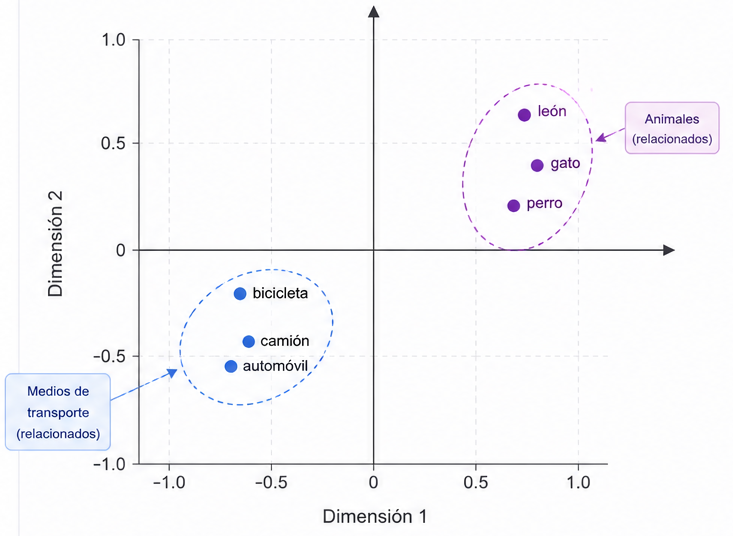
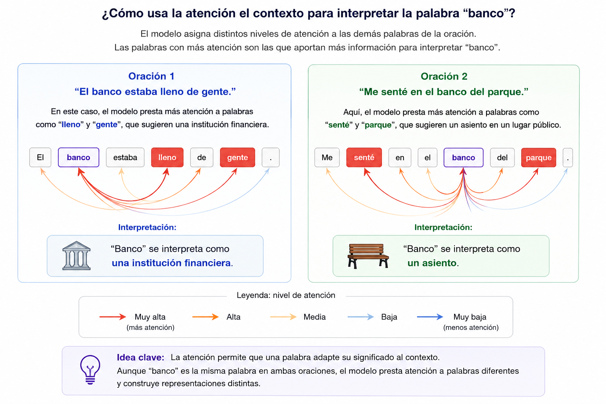
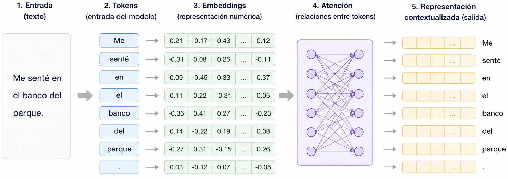

Transformers en acción
Una introducción al procesamiento de lenguaje natural a través de voz, texto e inteligencia artificial.
Una introducción al procesamiento de lenguaje natural a través de voz, texto e inteligencia artificial.
Esta página acompaña la charla-taller “Transformers en acción: una introducción al procesamiento de lenguaje natural”, impartida en el marco de las Escuelas de Verano de CIMAT, Unidad Monterrey.
El objetivo es explorar, de manera intuitiva y práctica, cómo los métodos modernos de inteligencia artificial pueden procesar lenguaje humano: desde textos escritos hasta señales de voz. A lo largo de la sesión veremos cómo una computadora puede transcribir audio, representar palabras mediante vectores y utilizar modelos neuronales para realizar tareas como clasificación, análisis de sentimiento o reconocimiento automático del habla.
Texto, voz, traducción automática, chatbots, análisis de sentimiento y reconocimiento automático del habla.
Tokens, embeddings, atención y contexto: las ideas principales detrás de muchos modelos modernos de IA.
Grabaremos audio, lo transcribiremos automáticamente y aplicaremos una clasificación sencilla sobre el texto generado.
Errores, sesgos, ruido, acentos, privacidad y aplicaciones en salud, educación y ciencia de datos.
El procesamiento de lenguaje natural, o PLN, es un área de la inteligencia artificial que estudia métodos computacionales para analizar, representar, generar y transformar lenguaje humano. Su objetivo es que las computadoras puedan trabajar con texto y voz de forma útil: traducir, resumir, responder preguntas, clasificar opiniones o transcribir una grabación.
A diferencia de otros tipos de datos, el lenguaje humano es ambiguo, contextual y variable. Una misma palabra puede tener distintos significados según la frase en la que aparece; una oración puede expresar ironía; y una grabación de voz puede cambiar dependiendo del acento, la velocidad, el ruido del ambiente o las características del hablante.
Convertir texto de un idioma a otro.
Identificar si un texto expresa una opinión positiva, negativa o neutral.
Convertir una señal de audio en texto escrito.
Construir sistemas capaces de responder preguntas o mantener conversaciones.
En esta charla nos centraremos en una idea muy concreta: tomar una señal de voz, convertirla en texto y después usar un modelo de IA para analizar ese texto. Este flujo permite conectar procesamiento de señales, estadística, aprendizaje automático y lenguaje natural.
Un transformer es una arquitectura de red neuronal diseñada para procesar secuencias, como palabras en una oración, fragmentos de texto o segmentos de audio. Su idea central es el mecanismo de atención, que permite al modelo identificar qué partes de la entrada son más relevantes para interpretar el contexto.
Por ejemplo, en la frase “El banco estaba lleno de gente”, la palabra “banco” probablemente se refiere a una institución financiera. En cambio, en “Me senté en el banco del parque”, la misma palabra tiene otro significado. Un modelo de lenguaje debe usar el contexto para distinguir estos casos.
Son las unidades en las que se divide el texto: palabras, partes de palabras o signos.
Son representaciones numéricas de los tokens. Permiten convertir lenguaje en vectores.
Permite que el modelo determine qué partes del texto son más relevantes para interpretar cada palabra.
Ayuda a distinguir significados dependiendo de las palabras que rodean a cada término.
Antes de que un modelo pueda procesar una oración, el texto debe dividirse en unidades más pequeñas llamadas tokens. Un token puede ser una palabra completa, una parte de una palabra, un signo de puntuación o incluso un símbolo especial. Esta etapa se conoce como tokenización.
Por ejemplo, la oración:
"Los transformers son increíbles."
En modelos reales, la división puede ser más detallada. Por ejemplo, una palabra poco común podría separarse en fragmentos más pequeños. Esto ayuda al modelo a trabajar con palabras nuevas o variantes que no aparecieron exactamente igual durante el entrenamiento.
Las computadoras no entienden palabras directamente. Para poder procesarlas, cada token debe transformarse en una representación numérica llamada embedding.
Un embedding es simplemente un vector de números asociado a cada token. Estos vectores son aprendidos por el modelo durante el entrenamiento y permiten representar el significado de las palabras de manera matemática.
Para ilustrar la idea, supongamos que cada palabra se representa mediante un vector de únicamente dos dimensiones:
Cada palabra puede interpretarse como un punto dentro de un plano. En modelos reales los embeddings suelen tener cientos de dimensiones, pero esta versión simplificada permite visualizar la idea.

Figura. Ejemplo ilustrativo de un espacio de embeddings en dos dimensiones. Las palabras con significados relacionados suelen ubicarse cerca unas de otras.
Observa que las palabras gato, perro y león aparecen relativamente cerca entre sí porque representan animales. Así también sucede con las palabras automóvil, camión y bicicleta, que representan medios de transporte.
Aunque el modelo sólo ve números, aprende automáticamente representaciones que organizan las palabras según sus relaciones y significados. Esta capacidad resulta fundamental para tareas como traducción automática, clasificación de textos o reconocimiento automático del habla.
Los embeddings permiten representar palabras mediante números. Sin embargo, para comprender una oración completa no basta con conocer el significado individual de cada palabra. El modelo también debe determinar cuáles son más importantes para interpretar el contexto. Esta idea conduce al mecanismo de atención, uno de los componentes fundamentales de los transformers.
Una vez que cada palabra ha sido convertida en un embedding, el modelo debe determinar qué partes de la oración son más importantes para comprender su significado. Esta idea se conoce como mecanismo de atención (attention mechanism).
La atención permite que el modelo asigne distintos niveles de importancia a las palabras de una oración. De esta manera, cuando intenta interpretar una palabra determinada, puede utilizar información proveniente de otras palabras relevantes dentro del contexto.

Representación simplificada del mecanismo de atención. El modelo asigna diferentes niveles de importancia a las palabras del contexto para interpretar una palabra objetivo.
Lo importante no es qué palabra recibe exactamente el mayor peso, sino la idea de que el modelo puede combinar información proveniente de múltiples palabras para construir una representación más rica y dependiente del contexto.
Gracias al mecanismo de atención, los transformers pueden capturar relaciones entre palabras incluso cuando se encuentran alejadas dentro de un texto. Esta capacidad ha sido fundamental para el éxito de modelos modernos como BERT, GPT y Whisper.
Hasta ahora hemos introducido tres ideas fundamentales: los tokens, los embeddings y el mecanismo de atención. Estas piezas permiten construir los modelos conocidos como transformers, una de las arquitecturas más importantes en la inteligencia artificial moderna.
De manera simplificada, un transformer recibe una secuencia de palabras o tokens como entrada. Cada token se convierte en un embedding, es decir, en una representación numérica. Después, mediante el mecanismo de atención, el modelo analiza las relaciones entre los tokens y construye una representación dependiente del contexto.
Esto significa que el modelo no sólo representa palabras de manera individual, sino que también incorpora información sobre cómo se relacionan entre sí dentro de una oración.

Representación simplificada del funcionamiento de un Transformer.
Una vez que el transformer ha construido una representación contextualizada del texto, esa información puede utilizarse para muchas tareas diferentes.
Identificar si un comentario es positivo, negativo o neutral.
Convertir texto de un idioma a otro.
Localizar información relevante y producir una respuesta.
Producir texto nuevo a partir de una instrucción o contexto.
Reducir un texto largo a sus ideas principales.
Convertir una señal de audio en texto escrito.
Actualmente existen muchos modelos basados en transformers. Aunque pueden estar diseñados para tareas distintas, comparten la idea de representar información mediante vectores y usar atención para aprovechar el contexto.
En esta demostración veremos cómo una frase hablada puede convertirse en texto y después ser analizada automáticamente por un modelo de inteligencia artificial.
El objetivo es observar un flujo completo de procesamiento de lenguaje natural:
Una persona dirá una frase breve frente al micrófono. Por ejemplo:
"Hoy estoy muy feliz porque aprobé el examen."
El audio será procesado por un modelo de reconocimiento automático del habla. Este modelo convierte la señal de voz en texto escrito.
Audio grabado
Hoy estoy muy feliz porque aprobé el examen.
Una vez obtenida la transcripción, el texto se envía a un modelo de clasificación. El modelo analiza la frase y estima si el sentimiento expresado es positivo, negativo o neutral.
Hoy estoy muy feliz porque aprobé el examen.
Resultado: sentimiento positivo
En esta etapa aparecen nuevamente las ideas que ya estudiamos: el texto se divide en tokens, los tokens se convierten en embeddings, el mecanismo de atención identifica relaciones importantes y el modelo produce una predicción.
Aquí colocaremos la aplicación interactiva para grabar audio, transcribirlo y clasificar el sentimiento de la frase.